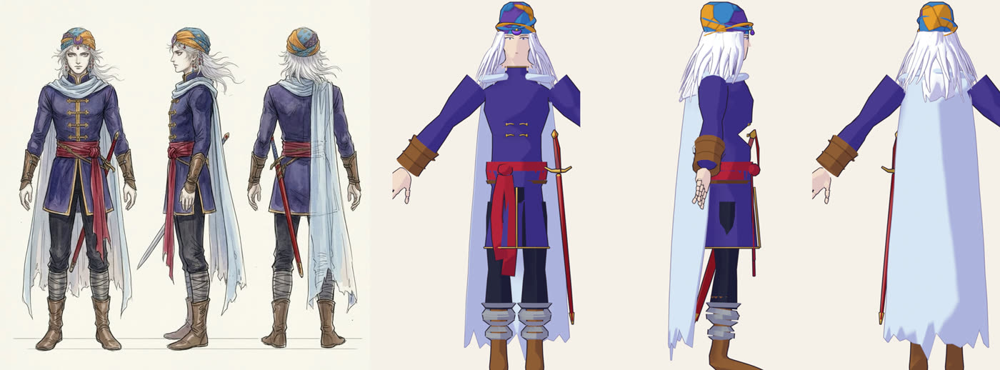

Hollow devlog · Nov 17, 2026
Hollow: November update
What changed in HOLLOW — Path of the Sword this month.
Moving to Godot 4
The game is being rewritten in Godot 4. The Three.js browser prototype stays as the place to design and tune. Both read the same rules file, and about 44,000 parity checks confirm the Godot port matches the prototype.
Combat rebuilt
I removed the six sword schools and their 225 skills to rebuild basic combat first. They will come back later. Built so far:
- Stamina: tap guard right after a string to recover most of the stamina it cost.
- Stances: Heaven, Man and Earth, each with clear strengths and weaknesses.
- Countering: readable wind-ups and a punish window after each enemy string.
- AI duelists: switch stances, space, feint and punish missed attacks.
- Hitboxes: hits land where the blade actually passes.
Attacks now use motion-captured animation. Hand-keyed clips cover the rest.
Characters and swords
The Hollow Swordsman is the first character modelled for the game: low-poly and toon-shaded, built in Blender from a concept sheet and rigged to the game's skeleton. He isn't in the game yet.

Next
- Tune combat and playtest.
- Bring the new characters and swords into the game.
- Rebuild the sword schools.